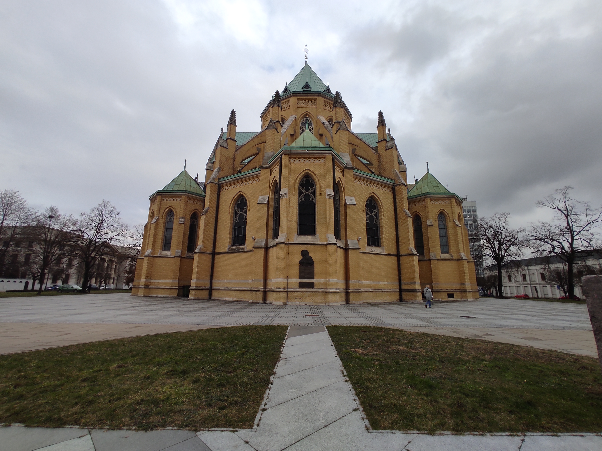

Art | History | Religion
Łódź Cathedral
This is the cathedral located in Lodz, Poland.
This cathedral stands out not only for its grandeur but also for its unique architecture.As I stood before it, I couldn't help but marvel at the intricate details and the sheer size of the building. Its soaring towers and pointed arches are characteristic of the Gothic architectural style that was popular during the Middle Ages.
Interestingly, the knowledge required to build this cathedral was not limited to the craftsmen and architects of Poland. The Gothic architectural style was actually shared all across Europe during the 12th and 13th centuries. This was the time of the great cathedrals, when religious buildings were constructed to be not only places of worship but also symbols of wealth and power.
It is no surprise, then, that we can see the same architectural style in many cathedrals in France. In fact, some of the most famous examples of Gothic architecture can be found in France, such as the Notre-Dame de Paris and the Cathédrale Notre-Dame de Chartres. The similarities between the cathedrals in France and the one in Lodz are striking, from the pointed arches and ribbed vaults to the ornate stone carvings and stained glass windows.

Outside the Cathedral
As I walked through the cathedral, I couldn't help but feel a sense of reverence for the craftsmen and architects who had dedicated their lives to creating such a masterpiece. The construction of a cathedral was no easy feat, and it required a great deal of knowledge and skill. The craftsmen had to be experts in stonemasonry, carpentry, and glassmaking, among other trades. They had to understand the properties of various materials and how to work with them to create the desired effect.

Inside the Cathedral
In addition to their technical skills, the craftsmen and architects had to be creative visionaries. They had to have a vision for the finished product and the ability to bring that vision to life. This required not only technical knowledge but also a deep understanding of art, history, and theology.
As an Erasmus student, I feel incredibly fortunate to have had the opportunity to visit this beautiful cathedral and to witness firsthand the incredible knowledge and skill that went into its construction. It is a testament to the power of human creativity and ingenuity, and it reminds us of the rich history and culture that can be found throughout Europe.